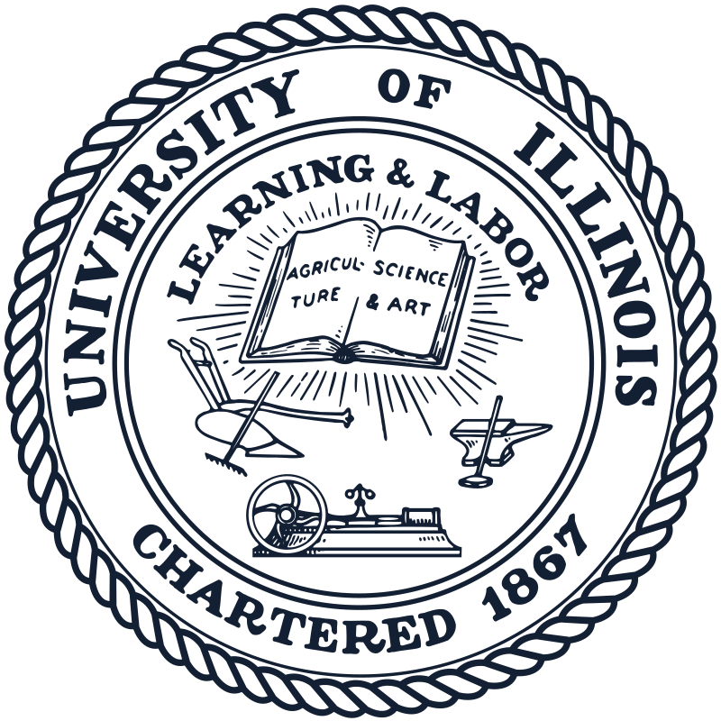
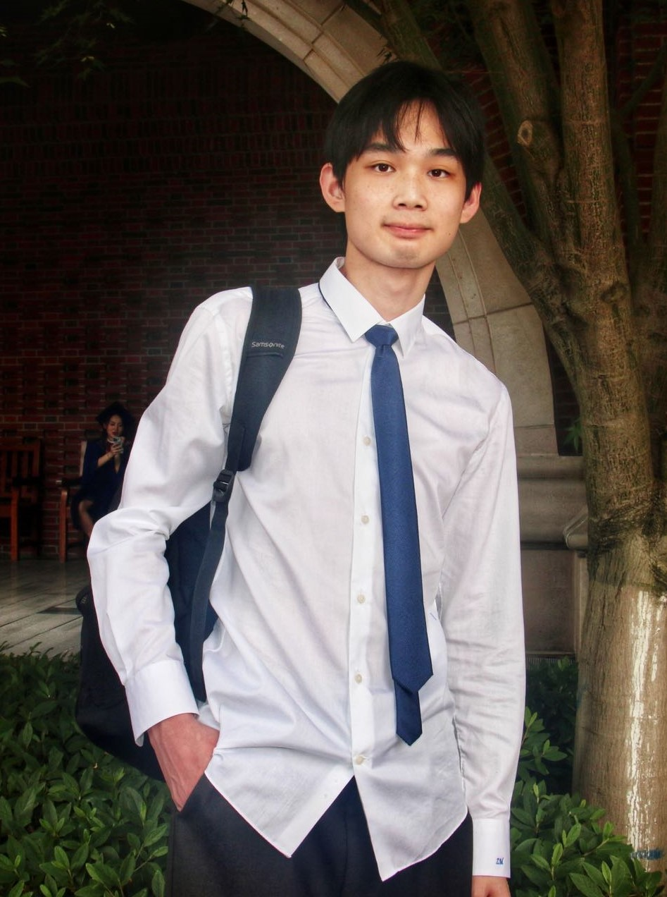
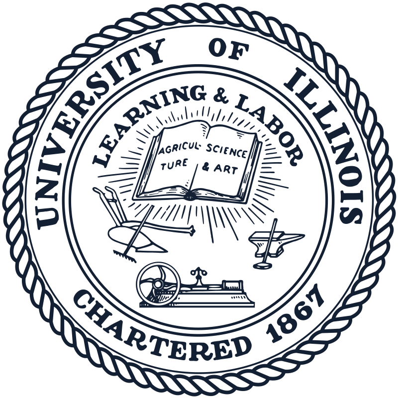
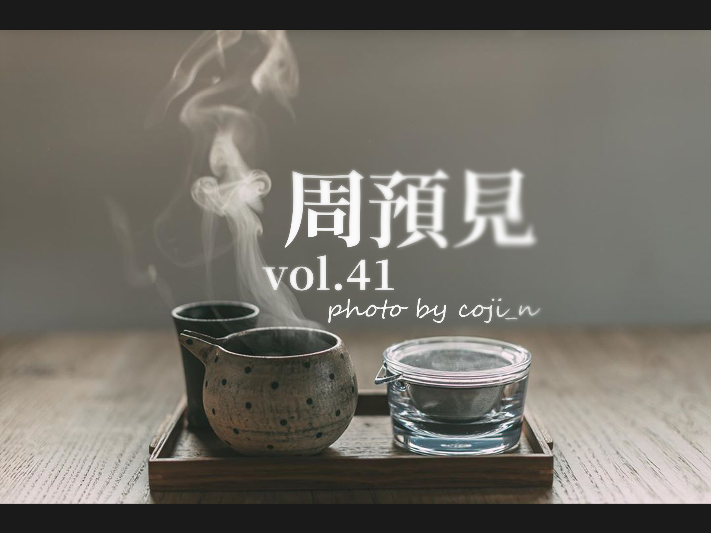

Education

University of Illinois, Urbana-Champaign, Aug. 2018 - May. 2022
B.S. in Computer Engineering

Zhejiang University, Aug. 2018 - May. 2022
B.E. in Electronics and Computer Engineering

Hi! I'm Zimu, a senior Computer Engineering student from the joint institute of Zhejiang University - University of Illinois at Urbana-Champaign. I'm interested in computer graphics (especially rendering and physically based simulation). It is because I'm a big fan of Math & Arts:
Outside of the classroom, I've been studying math on my own, some of my learning notes and blogs (in Chinese) are posted here. I am always fascinated by the process of generalization in mathematics, that's why I chose the word, "Abstractness is the price of Generality", as the tagline for my website. It is said by 3Blue1Brown, one of the initiations of my interest in math.
In my leisure time, I often draw, photograph or do some design. You can see some of my art works here.

University of Illinois, Urbana-Champaign, Aug. 2018 - May. 2022
B.S. in Computer Engineering
Zhejiang University, Aug. 2018 - May. 2022
B.E. in Electronics and Computer Engineering
Cut-and-Paste Neural Rendering, Aug. 2021 – Dec. 2021
University of Illinois at Urbana-Champaign
Mentor: David Forsyth
All-hexahedral Mesh Refinement with Flexible Density Control, Apr. 2021 – Aug. 2021
State Key Lab of CAD & CG, Zhejiang University
Mentor: Jin Huang
Teaching Assistant for MATH 241 CALCULUS III, Sept. 2020 – Jan. 2021
ZJUI institute
Instructor: Thomas Honold
Virtual Reality in Robot Assisted Surgical Training, Jun. 2019 – Aug. 2019
ZJUI institute
Mentor: Liangjing yang
TLEOS (Unix based Operating System), Apr. 2021
Course Project for ECE 391 Computer Systems Engineering
Code

FPGA-Based 3D Graphics Renderer, Dec. 2020
Final Project for ECE 385 Digital System Laboratory
Code
Monto Carlo Ray Tracer, Dec. 2020
Computing Assignment for GAMES101 Introduction to Computer Graphics
Code
Index Structure Database with Stack-based Query Processing, May. 2020
Computing Assignment for CS225 Data Structure
Code
You can see details of my projects here.

Design Event Posters, Sept. 2019 – Aug. 2020
New Media Center, International Campus, Zhejiang University
Aid Education in Remote Mountains of China, Aug. 2019
Jiaoma Center School, Jiaoma, Qiannan, Guizhou, China